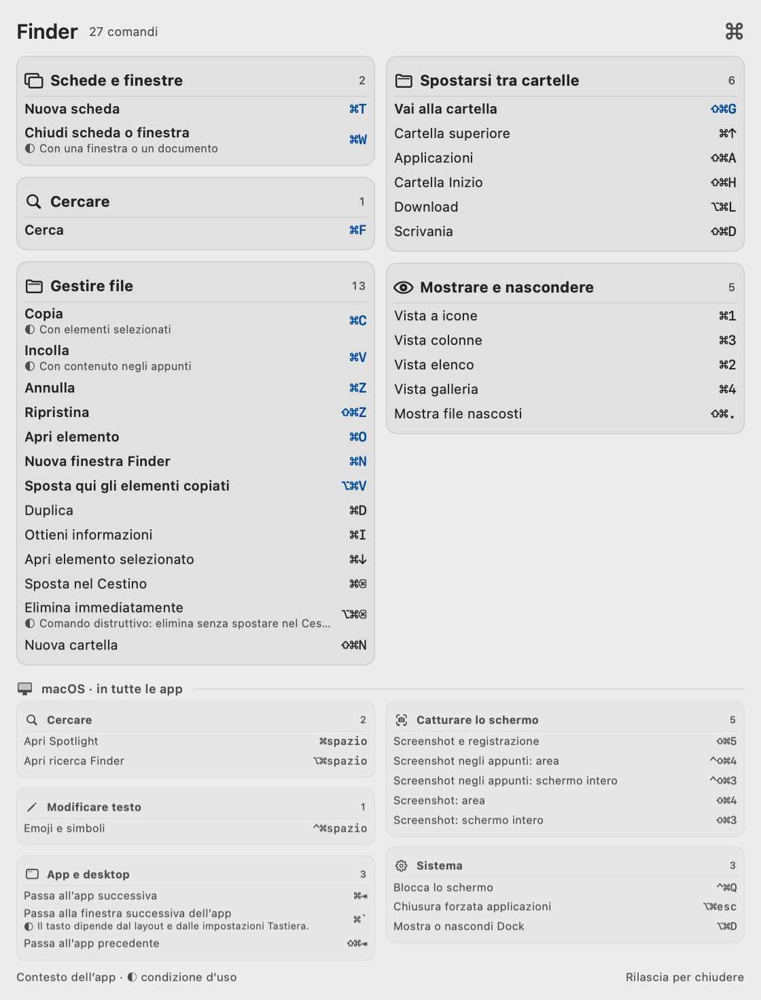
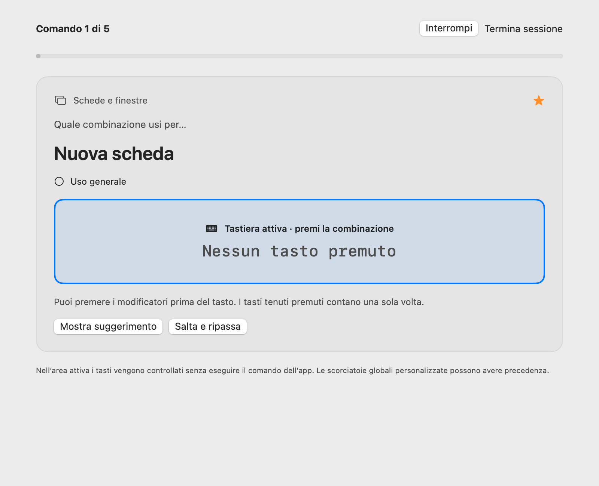

Le scorciatoie della tua app.
A un tasto di distanza.
Tieni premuto un modificatore. Guarda cosa puoi fare nell’app che stai usando. Impara le combinazioni mentre lavori.
Scarica per MacNon notarizzata. Leggi come installarla


Tieni premuto un modificatore per vedere le scorciatoie dell’app attiva. Rilascialo per chiudere il pannello.
Un’occhiata.
E torni al lavoro.
Shortcuts vive nella barra dei menu. Il suo pannello temporaneo lascia il controllo all’app che stai usando.
Tieni premuto un modificatore
Premi e tieni premuto Comando, Opzione, Ctrl, Maiuscole o Fn. Dopo una breve attesa, compare il pannello.
Restringi la scelta
Aggiungi un altro modificatore per filtrare le combinazioni. Le azioni restano raggruppate in base a quello che vuoi fare.
Continua a lavorare
Rilascia i modificatori per chiudere il pannello. Non prende il focus e lascia passare i clic. Le scorciatoie continuano a funzionare nella tua app.
Prova il filtro
Fai clic sui tasti qui sotto. Sono alcuni esempi di scorciatoie del Finder, non l’app vera e propria.
- Nuova finestra Finder⌘N
- Nuovo pannello⌘T
- Ottieni informazioni⌘I
- Nuova cartella⇧⌘N
- Vai alla cartella⇧⌘G
- Apri Download⌥⌘L
La prossima scorciatoia
te la ricordi.
Apri Studio per esplorare il catalogo o esercitarti con la tastiera. Scegli un’app, attiva l’esercizio e digita la combinazione o la sequenza. Rivedi un errore, poi riprova.


Studio riunisce il catalogo, i tuoi preferiti e gli esercizi con la tastiera in una finestra.
Tieni quelle che ti servono
Salva i preferiti, nascondi le azioni che non usi e recuperale da Nascoste. Importa le scorciatoie che hai già configurato nelle tue app.
Leggile a modo tuo
Scegli italiano, inglese o lingua automatica. Regola dimensione del testo, aspetto, posizione del pannello e modificatori di richiamo.
Esercitati con attenzione
Prova combinazioni e sequenze reali. Vedi gli errori, ripassali e conserva i progressi sul Mac. L’esercizio acquisisce i tasti solo quando ha il focus.
Pochi passaggi.
Poi è a portata di mano.
Questa versione è gratuita e open source. Non è firmata con Developer ID né notarizzata da Apple: macOS può chiederti di approvarne il primo avvio.
Scarica per MacNon serve il permesso Registrazione schermo. Puoi disattivare l’accesso ad Accessibilità in qualsiasi momento dalle Impostazioni di Sistema. Dopo un aggiornamento, macOS potrebbe chiederti di abilitarlo di nuovo.
Spostala in Applicazioni
Scarica il DMG, aprilo e trascina Shortcuts in Applicazioni. Poi apri Shortcuts da lì.
Approva il primo avvio
Se macOS la blocca, vai in Impostazioni di Sistema → Privacy e sicurezza → Apri comunque, poi conferma l’apertura di Shortcuts. Approva solo la copia scaricata dal rilascio di questo progetto.
Consenti l’accesso ad Accessibilità
Abilita Shortcuts in Impostazioni di Sistema → Privacy e sicurezza → Accessibilità. Serve per leggere i menu delle app e rilevare i modificatori premuti. L’icona Comando resta nella barra dei menu.
Sai cosa
stai installando.
Cosa legge Shortcuts?
I menu accessibili e il contesto strutturale dell’app attiva, i cataloghi offline e i file delle assegnazioni e le dichiarazioni delle estensioni degli editor supportati. Non registra quello che digiti nelle altre app. L’app non richiede account, non invia telemetria e non effettua traffico di rete; preferenze e progressi restano locali.
Conosce tutte le scorciatoie?
No. La copertura unisce menu live, cataloghi offline documentati e assegnazioni supportate di VS Code e Cursor. Un’app riconosciuta non garantisce una copertura completa. Alcuni menu si caricano solo quando vengono aperti e non tutte le condizioni del contesto o delle estensioni sono interpretabili. L’app segnala le informazioni parziali o condizionate.
Sono supportate entrambe le lingue?
Interfaccia, catalogo incluso ed esercizi supportano italiano e inglese, con un’opzione automatica che segue la lingua del sistema. Un titolo live sconosciuto proveniente da un’app di terze parti resta nella lingua originale quando manca una traduzione nel catalogo.
Funziona su un Mac meno recente?
Shortcuts richiede macOS 13 o successivo. Il download supporta Apple silicon e Intel. Liquid Glass nativo è disponibile da macOS 26; sui sistemi precedenti viene usato un materiale traslucido. Sono rispettate le impostazioni Riduci trasparenza e Aumenta contrasto.
Un esercizio esegue comandi in altre app?
La pratica avviene in un esercizio locale dedicato. Acquisisce i tasti solo quando il suo campo ha il focus ed esclude dalla digitazione le combinazioni riservate al sistema. Il pannello consultivo è separato: non intercetta i comandi delle tue app.
Posso modificarla o rimuoverla?
Sì. Puoi metterla in pausa o chiuderla dalla barra dei menu, revocare Accessibilità nelle Impostazioni di Sistema o rimuoverla da Applicazioni. Il codice è disponibile con licenza MIT: puoi leggerlo, compilarlo e adattarlo.
Codice aperto. Spazio alle tue idee.
Esplora il codice, correggi una scorciatoia o migliora una traduzione.